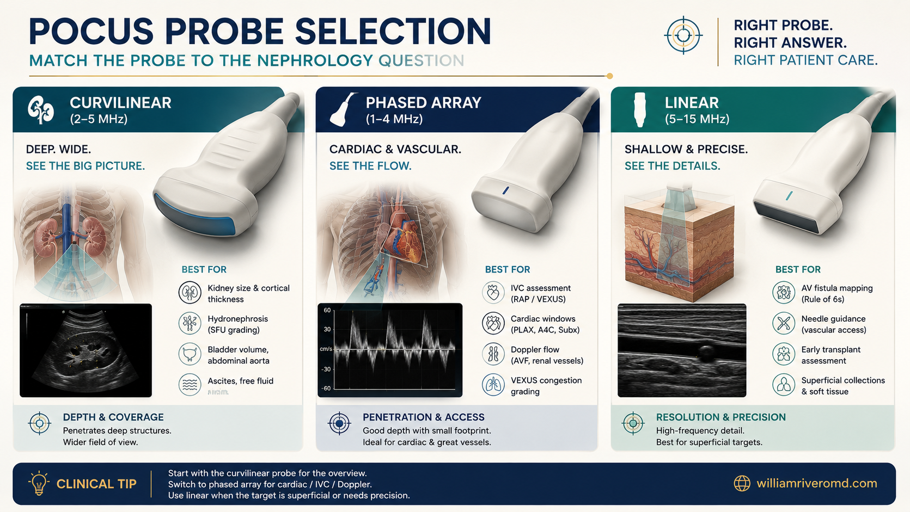
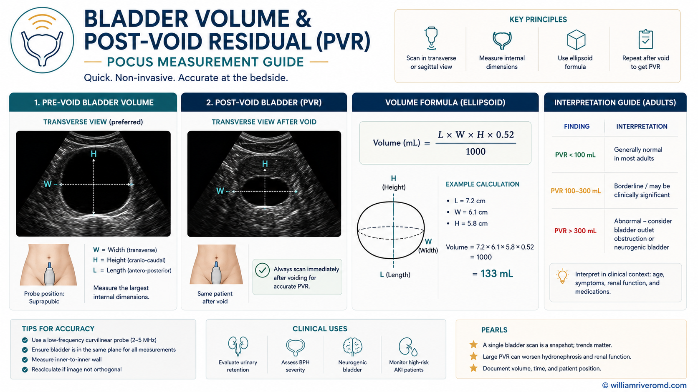
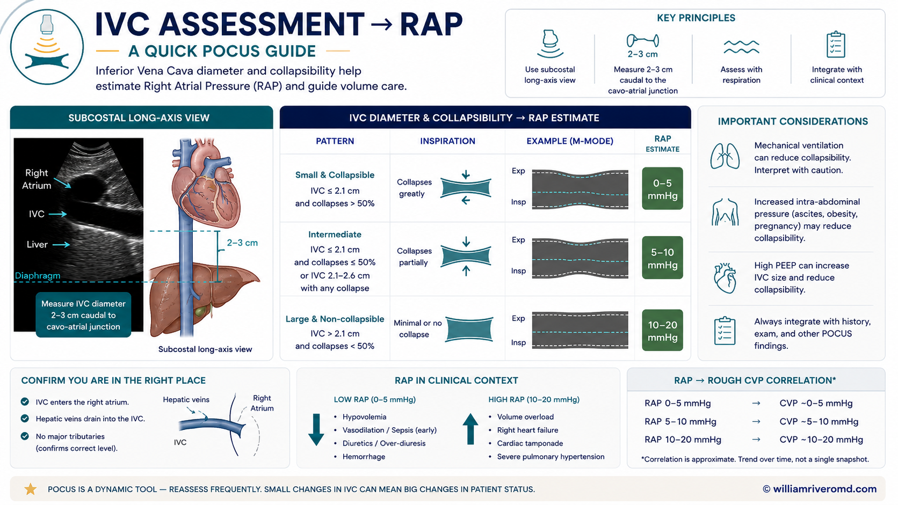
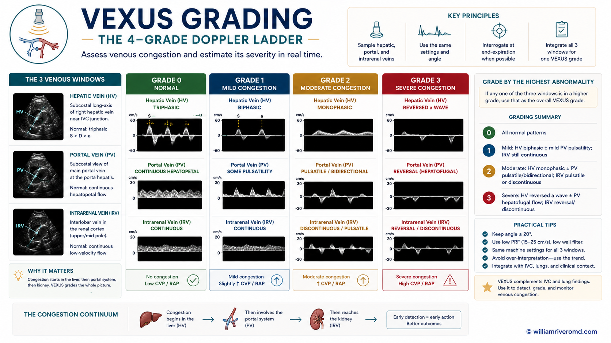
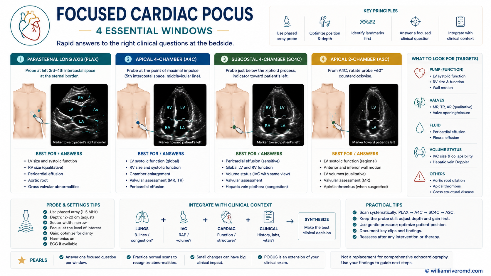
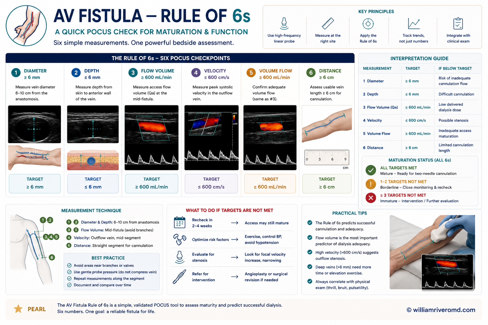

Physics, Probes, Knobology & Artifact Literacy
The minimum bench you need before approaching any window. Every higher-yield interpretation downstream is enabled — or sabotaged — by these basics.
POCUS in nephrology is built on three habits: match the probe to the question, optimize the image before interpreting it, and read artifact as information, not noise. Skipping any of these turns a confident bedside read into a confidently wrong one.1,3
1.1 Physics in plain terms
Ultrasound is the trade between frequency (higher = better axial resolution, worse penetration) and depth. A 2–5 MHz curvilinear beam reaches the deep retroperitoneum and IVC; a 7–12 MHz linear beam resolves a 2 mm fistula vessel wall but stops in the subcutaneous tissue. Axial resolution is the smallest distance the probe can separate along the beam (limited by wavelength); lateral resolution is across the beam (limited by beam width — sharper at the focal zone). Attenuation is the loss of signal with depth; gain (and time-gain compensation, TGC) is how we restore it without amplifying noise.
1.2 Probe selection — three transducers, three jobs
| Probe | Frequency | Nephrology use |
|---|---|---|
| Curvilinear | 2–5 MHz | Kidney, bladder, IVC long-axis, hepatic vein, intrarenal Doppler — the workhorse of renal & volume POCUS. |
| Phased array | 1–5 MHz | Focused cardiac (PLAX/PSAX/A4C/subcostal) and subcostal IVC through a small footprint between ribs. |
| Linear (high-frequency) | 7–12 MHz | AV fistula/graft surveillance, pre-creation vascular mapping, central venous access — superficial, high-resolution. |
1.3 Knobology — the five dials that matter at the bedside
- Depth — set so the structure of interest fills two-thirds of the screen.
- Gain & TGC — gain raises the whole image; TGC tunes near vs far. Aim for a fluid-filled vessel that is truly anechoic, not "dirty black."
- Focal zone — place at the depth of the target (sharpest lateral resolution there).
- Presets — abdominal for kidney/IVC; cardiac for focused echo (reverses default orientation marker); vascular for fistula.
- Doppler — color box small and tilted ≤ 60° to flow; pulsed-wave gate inside the vessel; lower PRF for slow venous signals, higher for arterial.

Doppler pearl — intrarenal resistive index (RI)
RI = (PSV − EDV) / PSV; normal intrarenal RI < 0.70. RI is non-specific but supports parenchymal/vascular disease and rises with venous congestion — pair it with the VEXUS module (§3) before acting on it in isolation.
1.4 Artifact literacy — read what isn't really there
- Acoustic shadowing — hyperechoic surface (stone, calcification, rib) + black "void" deep to it. Diagnostic for a calculus or rib edge.
- Posterior enhancement — bright signal deep to a fluid-filled structure (cyst, full bladder). Distinguishes simple cyst from solid mass.
- Reverberation — repeating horizontal lines below a strong reflector. In the lung this is the normal A-line.
- Ring-down (B-line) — vertical laser-like line from the pleural line to the screen's bottom edge, erasing A-lines, moving with sliding. Marker of extravascular lung water (§4).
- Mirror artifact — a duplicate of liver/spleen across the diaphragm — a common pitfall when judging pleural effusion.
1.5 Governance — image archiving, infection control, scope
Every bedside study should be archivable: a representative still or short clip per window, labeled with patient identifier and indication. Probes are semi-critical when they contact intact mucosa (e.g. transvaginal — not used here) and non-critical for intact skin: low-level disinfectant wipe (manufacturer-approved) between every patient; high-level disinfection for sterile-field use (e.g. internal jugular cannulation with sterile sheath). Scope of practice is institutional — POCUS findings should be documented as focused (not "complete US"), and any uncertain finding triggers formal imaging.2
Obstruction, Parenchyma & the Bladder
The single highest-yield application for the new clinician on the AKI ward: rule in obstruction, read chronicity off the cortex, and reframe "renal failure" as retention when the bladder is the problem.
2.1 The four bedside questions
- Is there obstruction? (hydronephrosis — and is the bladder full?)
- Is this acute or chronic kidney disease? (size, cortex thickness, echogenicity)
- Is the bladder the problem? (post-void residual)
- Is a mass cystic or solid? (simple vs complex; when to escalate)
2.2 Acquisition
- Right kidney via the hepatic acoustic window: probe at the mid-axillary line, coronal orientation, marker cephalad. Use the liver as the sonographic "lens." Sweep through the kidney in long axis, then rotate 90° for short axis.
- Left kidney via the splenic window: more posterior and cephalad than the right (the spleen is smaller; bowel gas often obscures). Have the patient take a deep breath; roll into right lateral decubitus if needed.
- Bladder: suprapubic, transverse first to find the maximal AP and transverse dimensions, then sagittal for craniocaudal. Volume ≈ 0.52 × W × H × D (mL).

2.3 Interpretation & thresholds
| Finding | Teaching point / threshold |
|---|---|
| Hydronephrosis grading | Mild — pelvis & calyces dilated, cortex preserved. Moderate — rounded ("bear-paw") calyces, mild cortical thinning. Severe — ballooned calyces, marked cortical thinning. Grade reflects both degree and chronicity of obstruction. |
| Kidney size | Normal ~9–12 cm bipolar length. Small (< 9 cm), echogenic, thin cortex → chronicity (CKD). Normal or enlarged kidneys with AKI suggest an acute, potentially reversible process. |
| Echogenicity | Cortex is normally hypo-echoic to adjacent liver/spleen. Cortex ≥ liver echogenicity → medical renal disease (glomerular/tubulointerstitial). |
| Cyst | Simple — anechoic, thin wall, posterior enhancement → benign. Complex (septa, mural nodule, solid component, calcification) → formal imaging / Bosniak classification. |
| Bladder / PVR | Post-void residual normal < 50 mL (< 65 y) to < 100 mL (≥ 65 y). A large PVR reframes "renal failure" as post-renal/retention — catheter first, work-up second. |
| Stones | Hyperechoic focus + posterior acoustic shadow. Color Doppler twinkle artifact supports a calculus when shadow is equivocal. |
Decision point — AKI workup
An obstructed (hydronephrotic) kidney or a high PVR converts the differential to post-renal AKI — decompress first (Foley / nephrostomy) before pursuing intrinsic causes. Absence of hydronephrosis does not fully exclude early or volume-depleted obstruction; rescan after rehydration or pursue CT urography if pre-test suspicion stays high.

2.4 Pitfalls & mimics
- Extrarenal pelvis — a pelvis that lies outside the renal sinus is normally a few mL of fluid and mimics mild hydronephrosis. Reassess after voiding.
- Parapelvic cysts — clustered, round, do not communicate with the ureter; look for the cyst wall vs branched calyceal anatomy.
- Full bladder / reflux — a distended bladder back-pressures the upper tract and falsely "creates" mild bilateral dilation. Rescan after catheter drainage.
- Decompressed obstruction — early or volume-depleted obstruction may show minimal dilation; bowel gas commonly limits the left kidney.
- Renal cell carcinoma — a solid renal lesion is never a POCUS diagnosis; refer for contrast-enhanced CT/MRI.
Cross-organ link — post-renal AKI
Obstruction raises intratubular pressure → transcapillary filtration gradient collapses → GFR falls. Relief restores filtration over hours to days. When obstruction co-exists with venous congestion (high VEXUS, §3), both axes must be relieved for renal recovery — neither alone is enough.
The Highest-Yield Nephrology POCUS Domain
Replace "dry weight" guesswork with a graded, mechanism-based read of forward filling and backward venous congestion. This is the sonographic face of cardiorenal syndrome.
3.1 IVC — right atrial pressure estimate
The IVC is a low-pressure venous capacitance vessel that mirrors right atrial pressure (RAP) through its diameter and respiratory variation. Image the IVC 2–3 cm caudal to the cavo-atrial junction (or just caudal to the IVC–hepatic vein confluence) in long axis, with the probe in the subxiphoid window. Measure diameter at end-expiration and assess collapse with a sharp sniff.
| IVC pattern | Interpretation (RAP estimate) |
|---|---|
| ≤ 2.1 cm, > 50% collapse with sniff | Normal RAP (~3 mmHg, range 0–5) |
| Intermediate (either ≤ 2.1 cm with poor collapse, or > 2.1 cm with brisk collapse) | Intermediate RAP (~8 mmHg) — integrate with other windows |
| > 2.1 cm, < 50% collapse | Elevated RAP (~15 mmHg) — plethoric IVC |
Confounders. Mechanical ventilation (positive pleural pressure inverts the normal respiratory variation), raised intra-abdominal pressure (transmits to IVC), pulmonary hypertension, athletic physiology, and severe tricuspid regurgitation all distort the diameter–pressure relationship. Read the IVC as a gate, not the whole story.4

50% collapse → ~3 mmHg; intermediate → ~8 mmHg; > 2.1 cm with < 50% collapse → ~15 mmHg) and a confounder list (mechanical ventilation, intra-abdominal pressure, pulmonary hypertension, athletes, tricuspid regurgitation)." style="width:100%;max-width:820px;border-radius:10px;display:block;margin:0 auto;" loading="lazy" width="1671" height="941">3.2 VEXUS — Venous Excess Ultrasound grading
VEXUS converts IVC plethora into a graded venous-congestion score by adding pulsed-wave Doppler of the hepatic vein, portal vein, and intrarenal vein. It tracks dynamically across hemodialysis ultrafiltration (ACUVEX cohort)5 and predicts worsening renal function in acute heart failure6 and the ICU AKI prevalence cohort.7
Component Doppler severity
| Vein | Normal | Mild abnormality | Severe abnormality |
|---|---|---|---|
| Hepatic | S > D (systolic dominant, both antegrade) | S < D (S still antegrade) | S-wave reversal (retrograde flow toward liver) |
| Portal | Pulsatility < 30% | 30–49% | ≥ 50% pulsatility |
| Intrarenal vein | Continuous | Biphasic (S + D waves) | Monophasic (D-only)8 |
Grade assignment
| Grade | Definition |
|---|---|
| Grade 0 | IVC < 2 cm — no congestion; do not grade. |
| Grade 1 — Mild | IVC ≥ 2 cm plus normal or only mild Doppler abnormalities. |
| Grade 2 — Moderate | IVC ≥ 2 cm plus severe abnormality in exactly one venous bed. |
| Grade 3 — Severe | IVC ≥ 2 cm plus severe abnormality in ≥ 2 venous beds. |

D, portal pulsatility < 30%, renal continuous → Grade 3 IVC ≥ 2 cm with hepatic S-wave reversal, portal ≥ 50% pulsatility, monophasic intrarenal." style="width:100%;max-width:820px;border-radius:10px;display:block;margin:0 auto;" loading="lazy" width="1672" height="941">Pitfalls — when not to trust the grade
- Cirrhosis / high-output states produce portal pulsatility unrelated to right-heart congestion.
- Arrhythmia (AF, frequent ectopy) degrades all three waveforms — interpret with caution.
- Renal vein signal is technically demanding; use a small color box at an interlobar vein, sample with a 60° angle and a low velocity scale.
- Require IVC plethora (≥ 2 cm) before grading — Doppler abnormalities without a plethoric IVC are not VEXUS.
Decision point — congestive nephropathy
A high VEXUS grade signals that renal dysfunction is driven by backward venous congestion (elevated renal venous pressure → reduced transrenal perfusion gradient → falling GFR), not "pre-renal underfilling." The action is decongestion — loop diuretics, ultrafiltration, or both — and a falling VEXUS grade is an objective endpoint. Avoid the reflex fluid bolus.
3.3 Cross-organ link
VEXUS is the sonographic face of cardiorenal syndrome (CRS) types 1 & 2, and of hepatic congestion in the same patient. The unifying frame: the kidney is an early victim of systemic venous congestion. When VEXUS is paired with lung ultrasound (§4) and a focused echo, the volume status of the AHF or HD patient is mapped end-to-end at the bedside.
Extravascular Lung Water & the Four-Window Focused Echo
Lung-ultrasound B-lines see pulmonary congestion before auscultation, radiograph, or symptoms. The focused echo answers four binary questions that change therapy at the bedside.
4.1 Lung ultrasound — A-lines vs B-lines
Set the curvilinear (or phased) probe perpendicular to the chest wall in a longitudinal orientation so two rib shadows flank a bright pleural line ("bat sign"). The lung sits deep to the pleura.
- A-lines — horizontal lines parallel to and equidistant below the pleural line. Reverberation artifact = normal aerated lung or pneumothorax (if sliding is also absent).
- B-lines — vertical, hyperechoic, laser-like lines arising from the pleural line, extending to the bottom of the screen, erasing A-lines, moving with sliding. They mark interstitial fluid (extravascular lung water, EVLW).
- Quantification. ≥ 3 B-lines in a single intercostal field = positive zone. Sum positive zones across an 8-zone (4 per hemithorax) or 28-zone protocol for a semi-quantitative congestion score.

Why this matters in nephrology
B-lines detect pulmonary congestion before rales, before chest X-ray opacities, and before dyspnea. LUS-guided ultrafiltration in HD is associated with better BP control and fewer decompensation events, and a high B-line burden flags an undertreated cardiorenal phenotype that fluid restriction alone will not fix.9
Also screen for
- Pleural effusion — anechoic stripe above the diaphragm with the "spine sign" (vertebrae visible above the diaphragm because of the fluid acoustic window).
- Pneumothorax — absent pleural sliding + absent B-lines + a "lung point" where sliding resumes. (Uncommon in pure nephrology workflow but important after access / biopsy.)
4.2 Focused cardiac POCUS
Four windows, four questions — none of them an echocardiographer's exam.
| Window | Target | Bedside question |
|---|---|---|
| PLAX (parasternal long-axis) | LV, mitral & aortic valves, LA, pericardium | Gross LV systolic function (eyeball EF); pericardial effusion. |
| PSAX (parasternal short-axis, mid-papillary) | LV cavity geometry & thickening | Regional wall motion at a glance; "D-shaped" septum → RV pressure/volume overload. |
| A4C (apical 4-chamber) | All four chambers; tricuspid & mitral inflow | RV size relative to LV (RV ≥ LV at the base = abnormal); gross atrial size. |
| Subcostal | 4-chamber + IVC long-axis | Rescue view when PLAX/A4C fail (COPD, post-op); IVC for RAP (§3). |
Pericardial effusion / tamponade physiology
Anechoic stripe surrounding the heart inside the bright pericardium. Tamponade is a clinical diagnosis, but POCUS supports it: a circumferential, often large effusion, with right-atrial systolic collapse, right-ventricular early-diastolic collapse, and a plethoric, non-collapsing IVC. In a uremic patient with hypotension, this is a stat-call sign.

Decision point — focused echo limits
Focused cardiac POCUS rules in gross findings; it does not exclude regional wall motion abnormality, valvular disease, or HFpEF. When the bedside question is "is the kidney being injured by a failing heart?", a normal focused echo does not close the workup — refer for full echocardiography.
AV Access Surveillance & Ultrasound-Guided Procedures
The dialysis patient's lifeline is sonographic. Early access surveillance preserves it; procedural guidance prevents catheter-related morbidity.
5.1 AV access surveillance (linear probe)
Use the high-frequency linear probe across the fistula/graft in short axis first (round, anechoic lumen with thin echogenic wall) to locate the anastomosis, then long axis for length and flow direction. Add color Doppler (low PRF for venous outflow, high PRF for arterial inflow) and PW Doppler for peak velocities.
Rule of 6s — AV fistula maturation
- Flow > 600 mL/min in the draining vein.
- Diameter ≥ 6 mm at the cannulation segment.
- Depth ≤ 6 mm from skin (deeper = cannulation difficulty).
- Assess at ~6 weeks post-creation.
- Venous needle points away from the anastomosis; left arm preferred when possible.
What to detect
- Juxta-anastomotic / outflow stenosis — > 50% diameter reduction or a focal > 2:1 peak-velocity ratio across the narrowing; visible aliasing on color Doppler.
- Thrombosis — non-compressible lumen, no color or PW signal, possibly echogenic intraluminal material.
- Aneurysm / pseudoaneurysm — focal saccular dilation; yin-yang color flow inside a pseudoaneurysm with a feeding "neck."
- Steal — high-volume access with distal arterial flow reversal, particularly in diabetic / proximal accesses (clinical + perfusion findings still primary).
- Pre-creation vascular mapping — arterial inflow (radial / brachial) calibre & patency; venous outflow (cephalic / basilic) calibre, patency, and depth.
5.2 Procedural guidance
- Central venous access — real-time ultrasound-guided cannulation of the internal jugular and femoral veins is now standard of care: pre-scan for patency, thrombus, and a compressible vein, then keep the needle tip in view through the wall. (Subclavian is anatomic, not US-guided.)
- Kidney biopsy — patient prone, breath-held expiration; target the lower-pole cortex; confirm no overlying bowel loop, large vessel, or pleural reflection. Real-time guidance (out-of-plane or in-plane) is now preferred to a single pre-scan "mark and stab."
- PD catheter siting — ultrasound-marked entry to avoid epigastric vessels and adhesions; intra-procedural check for the catheter tip in the pelvis.
- Difficult bladder catheterization — sonographic confirmation that the bladder is actually full before another pass; rules out the empty-bladder false-failure.

600 mL/min, diameter ≥ 6 mm, depth ≤ 6 mm, assess at ~6 weeks) and three complication mini-panels on the right: juxta-anastomotic stenosis (> 2:1 PSV ratio, color aliasing), thrombosis (non-compressible, no flow), and pseudoaneurysm (yin-yang sign with feeding neck)." style="width:100%;max-width:820px;border-radius:10px;display:block;margin:0 auto;" loading="lazy" width="1536" height="1024">Cross-organ link — access is the dialysis lifeline
Early sonographic surveillance — a brief monthly look at flow, depth, and any focal velocity step-up — preserves AV access patency and pre-empts thrombosis. Every catheter avoided is a downstream CRBSI, central-vein stenosis, and hospitalization avoided.
The Five-Point Scan → Hemodynamic Phenotype → Action
The capstone module. Findings from each window are assembled into one of a few physiologic phenotypes, each with a guideline-aligned action. This is what protects the patient from "fluid in both directions."

6.1 The five-point scan
In any undifferentiated AKI, suspected congestion, or pre-dialysis assessment, scan five sites in this order and record one finding per site:
- Kidneys / bladder — hydronephrosis? PVR?
- IVC — diameter and collapse → RAP tier.
- Lungs — 8-zone B-line count.
- Focused cardiac — LV "eyeball" EF, pericardial effusion, RV size.
- VEXUS Doppler — hepatic, portal, intrarenal vein (only if IVC ≥ 2 cm).
6.2 Phenotype → action
| Phenotype | POCUS signature | Action (guideline anchor) |
|---|---|---|
| Congestive nephropathy / CRS-1/2 | Plethoric IVC, VEXUS 2–3, ≥ 3 B-lines per zone in multiple zones, ± reduced LV function | Decongest — loop diuretic ± ultrafiltration; reassess by falling VEXUS / B-line burden. SGLT2 inhibitor where indicated (KDIGO 2024 / ADA / ACC). |
| True hypovolemia / pre-renal | Small, collapsible IVC; dry lungs (A-pattern); hyperdynamic LV ("kissing walls") | Volume resuscitation (balanced crystalloid), reassess dynamically; stop pressors that mask the deficit. |
| Obstructive / post-renal AKI | Hydronephrosis ± high PVR (full bladder) | Decompress first (Foley / nephrostomy) — then revisit the intrinsic workup. |
| Cardiorenal with pump failure | Reduced LV, B-lines, high VEXUS, possibly pericardial effusion | Decongest + neurohormonal therapy (ARNI/MRA/SGLT2i per ACC/AHA HF); avoid the reflex fluid bolus. |
| Tamponade physiology | Pericardial effusion + RA/RV diastolic collapse + plethoric IVC | Stat pericardiocentesis — fluid is a temporizing bridge, not a treatment. |
Unifying frame — the kidney between forward perfusion and backward congestion
POCUS lets the clinician see both sides of the kidney's perfusion equation at the bedside and titrate therapy to an objective, repeatable endpoint — not to weight, symptoms, or a static creatinine alone. This is the single biggest cognitive shift POCUS brings to nephrology: volume is a phenotype, not a number on a scale.
6.3 An integrated example
A 68-year-old with HFrEF and CKD-G3b is admitted with worsening creatinine. Reflex instinct: "pre-renal — give fluids." Five-point scan: no hydronephrosis, IVC 2.6 cm with < 20% collapse, 4 B-lines per zone bilaterally in lower zones, mildly reduced LV with a moderately dilated RV, VEXUS Grade 3 (S-reversal in hepatic, portal pulsatility 60%, monophasic intrarenal). The action changes entirely: decongestion, not volume; SGLT2i continued; falling VEXUS at 48 h becomes the objective endpoint.
Tiered Skills, Logbooks & Departmental QA
POCUS is a skill, not a credential — but it must be governed. A reproducible competency pathway protects patients and trainees alike.
Documented training gap: in published surveys, only ~38% of nephrology fellows received POCUS education and only ~33% of those felt competent to perform it independently.10 This guide is a self-study scaffold; it does not replace supervised acquisition.
7.1 Tiered competency
- Tier 1 — Image acquisition. Can the trainee obtain a diagnostic-quality image at each window? Direct-observation checklist per application.
- Tier 2 — Interpretation. Can the trainee distinguish normal from abnormal and label findings against published thresholds (e.g. VEXUS grades, RAP tiers, rule of 6s)?
- Tier 3 — Clinical integration. Can the trainee combine multi-organ findings into a phenotype and a guideline-aligned action — and articulate what would change it?
7.2 Image logbook
- Suggested minimum supervised studies per domain before independent use (institutional thresholds vary; ASN precourse offers a reasonable target).2
- Archive representative still images and short clips (with patient identifier, indication, and a one-line interpretation) for every supervised case.
- Quarterly portfolio review with a designated POCUS faculty mentor.
7.3 Assessment
- Entrustable tasks — directly observed acquisition + interpretation.
- Image-review quizzes — graded with annotated answer keys.
- Integrated case OSCEs — the trainee performs a five-point scan and proposes a phenotype + action.
7.4 Governance — a departmental POCUS committee
- Owns credentialing criteria and the privileging pathway.
- Runs QA image review (random audits of archived studies).
- Maintains the curriculum and the institutional protocol pack (probe disinfection, archiving, reporting language).
- Mirrors published ASN recommendations for nephrology POCUS programs.2
Limits and when to escalate
A POCUS finding that you cannot reconcile with the clinical picture — or any solid renal lesion, complex cyst, unexpected pleural fluid, suspected aortic dissection / abdominal aortic aneurysm, or any pediatric uncertainty — is a referral for formal radiology imaging or echocardiography. POCUS is the bridge to the question; it is not always the answer.
Visual Atlas — Probes, Grades, Doppler & Phenotypes
Nine planned figures map the curriculum visually. Each is a Constitution-v1.0 hybrid: anatomical truth + ultrasound physics + a clinical-action callout, dual clinician/patient labels, navy williamriveromd.com watermark.
8.1 Quick-reference card
| Domain | Threshold / rule |
|---|---|
| Hydronephrosis | Mild = pelvis/calyces dilated, cortex preserved · Moderate = rounded calyces, mild cortical thinning · Severe = ballooned calyces, marked thinning |
| Kidney size | Normal ~9–12 cm · Small + echogenic → CKD · Normal/enlarged in AKI → potentially reversible |
| PVR | Normal < 50 mL (< 65 y); < 100 mL (≥ 65 y) |
| IVC → RAP | ≤ 2.1 cm + > 50% collapse = ~3 mmHg · > 2.1 cm + < 50% = ~15 mmHg · intermediate = ~8 mmHg |
| VEXUS | Grade 0 (IVC < 2 cm) · 1 mild · 2 severe in one bed · 3 severe in ≥ 2 beds |
| Lung B-lines | ≥ 3 per intercostal field = positive zone; sum 8 or 28 zones for score |
| AV fistula rule of 6s | Flow > 600 mL/min · diameter ≥ 6 mm · depth ≤ 6 mm · at ~6 weeks |
| Intrarenal RI | Normal < 0.70; elevated supports parenchymal/vascular disease & congestion |
8.2 Figure manifest
| # | Filename | Subject |
|---|---|---|
| F1 | pocus-probe-selection-visual-aid-hybrid-v2.png | Curvilinear / phased-array / linear probes matched to kidney, IVC/cardiac, AV access; frequency-vs-penetration trade-off. |
| F2 ★ | hydronephrosis-pocus-grading-hybrid-v2.png | Mild / moderate / severe hydronephrosis with paired anatomy & US physics (FLAGSHIP). |
| F3 | bladder-pvr-measurement-visual-aid-hybrid-v2.png | Suprapubic bladder transverse + sagittal; three-dimension volume formula; PVR thresholds. |
| F4 | ivc-rap-assessment-hybrid-v2.png | IVC long-axis with caliper, collapsibility, three-tier RAP table, confounder list. |
| F5 ★ | vexus-grading-hybrid-v2.png | VEXUS four-grade Doppler ladder — hepatic, portal, intrarenal (FLAGSHIP). |
| F6 ★ | lung-blines-evlw-hybrid-v2.png | A-lines vs B-lines, bat sign, 8-zone & 28-zone grids (FLAGSHIP). |
| F7 | focused-cardiac-windows-visual-aid-hybrid-v2.png | PLAX / PSAX / A4C / subcostal with target per window. |
| F8 | av-fistula-rule-of-6s-hybrid-v2.png | Fistula anatomy with rule-of-6s callouts; stenosis / thrombosis / aneurysm panels. |
| F9 | pocus-volume-phenotypes-visual-aid-hybrid-v2.png | Five-point scan flow → phenotype → action decision tree. |
Figure system note
Each figure follows the williamriveromd.com Constitution v1.0 (1672×941 px, 16:9, GPT-4o), with the mandatory seven-layer architecture (anatomical truth · spatial orientation · render specifications · imaging physics · negative constraints · style reference · QA checklist). Full prompts for the three flagship figures (F2, F5, F6) are maintained in the blueprint and are paste-ready into the image generator.
Glossary of Terms & Abbreviations
Every acronym and sonographic term used in this guide, with a one-line working definition. Skim before rounds; refer back during a scan.
9.1 Acronyms — physiology, syndromes & programs
| Term | Expansion | Working definition |
|---|---|---|
| POCUS | Point-of-Care Ultrasound | Focused, hypothesis-driven bedside US — confirms or refutes one physiologic question and converts the answer into a therapeutic decision. |
| AKI | Acute Kidney Injury | Abrupt fall in GFR over hours–days, staged by KDIGO creatinine/urine-output criteria. |
| CKD | Chronic Kidney Disease | GFR < 60 mL/min/1.73 m² or marker of kidney damage ≥ 3 months. |
| GFR | Glomerular Filtration Rate | Volume of plasma filtered per unit time; estimated (eGFR) by CKD-EPI or similar. |
| AHF | Acute Heart Failure | Rapid onset/worsening of HF signs/symptoms requiring urgent therapy. |
| HF / HFrEF / HFpEF | Heart Failure / reduced / preserved EF | Reduced (LVEF ≤ 40%) vs preserved (LVEF ≥ 50%) ejection fraction. |
| CRS-1 / CRS-2 | Cardiorenal Syndrome types 1, 2 | Acute (1) or chronic (2) cardiac dysfunction driving renal dysfunction — VEXUS is its sonographic face. |
| LVH | Left Ventricular Hypertrophy | Wall thickening of the LV, often driven by hypertension or volume overload. |
| LV / RV / LA / RA | Left / Right Ventricle, Atrium | The four cardiac chambers as labeled on every echo window. |
| EF | Ejection Fraction | Stroke volume ÷ end-diastolic volume — "eyeball" on POCUS, quantified on formal echo. |
| RAP | Right Atrial Pressure | Pressure in the RA; estimated from IVC diameter + respiratory variation (§3). |
| TR | Tricuspid Regurgitation | Backward flow across the tricuspid valve — a confounder of IVC interpretation. |
| HD | Hemodialysis | Extracorporeal renal-replacement therapy by diffusion ± convection. |
| PD | Peritoneal Dialysis | RRT using the peritoneum as the dialysis membrane. |
| IDH | Intradialytic Hypotension | BP drop during HD; mechanism-mapped to refilling, tonicity, tone, or cardiac reserve. |
| UF / UFR | Ultrafiltration / Ultrafiltration Rate | Convective fluid removal during HD; UFR usually expressed in mL/kg/hr. |
| IDWG | Interdialytic Weight Gain | Weight gained between HD sessions, mostly fluid. |
| CRBSI | Catheter-Related Bloodstream Infection | Bacteremia attributable to an intravascular catheter. |
| IJ | Internal Jugular (vein) | The preferred US-guided central venous access site. |
| AVF / AVG | Arteriovenous Fistula / Graft | Surgical (AVF) or prosthetic (AVG) anastomosis used for HD access. |
| KDIGO | Kidney Disease: Improving Global Outcomes | International nephrology guideline body (AKI, CKD, BP, AKI/AKD, diabetes, etc.). |
| ACC / AHA | American College of Cardiology / Heart Association | U.S. cardiology guideline bodies (HF, AHF, pericardial disease). |
| ADA | American Diabetes Association | Diabetes guideline body — SGLT2i indications in CKD/HF. |
| ASN | American Society of Nephrology | Kidney Week and the POCUS precourse cited in §7. |
| SGLT2i | Sodium-Glucose Cotransporter-2 inhibitor | Class with renal & cardiac protection (dapa-, empa-, cana-gliflozin). |
| ARNI | Angiotensin Receptor–Neprilysin Inhibitor | Sacubitril/valsartan — pillar of HFrEF therapy. |
| MRA | Mineralocorticoid Receptor Antagonist | Spironolactone / eplerenone / finerenone — HF + CKD/diabetic kidney disease. |
| OSCE | Objective Structured Clinical Examination | Performance-based assessment used in §7 to test integrated POCUS skills. |
| QA | Quality Assurance | Departmental image review & credentialing process for POCUS programs. |
9.2 VEXUS, IVC & venous Doppler vocabulary
| Term | Definition |
|---|---|
| VEXUS | Venous Excess Ultrasound — a four-grade venous-congestion score combining IVC plethora with hepatic, portal, and intrarenal vein pulsed-wave Doppler. |
| IVC | Inferior Vena Cava — measured 2–3 cm caudal to the cavo-atrial junction in long axis. |
| Plethoric IVC | IVC ≥ 2 cm with < 50% respiratory collapse — prerequisite to grade VEXUS. |
| S / D / A waves | Hepatic-vein Doppler components: systolic (S, antegrade in atrial diastole), diastolic (D, antegrade in atrial systole), and the A reversal in late atrial systole. |
| S-wave reversal | Hepatic-vein S wave flows retrograde toward the liver — severe right-heart congestion (VEXUS Grade 3 hepatic). |
| Portal pulsatility (%) | (Vmax − Vmin) ÷ Vmax × 100 in the main portal vein. < 30% normal; 30–49% mild; ≥ 50% severe. |
| Continuous / biphasic / monophasic intrarenal vein | Normal / mild / severe venous congestion at the interlobar level; monophasic-D-only is the most ominous. |
| RI | Resistive Index = (PSV − EDV) / PSV; normal intrarenal < 0.70. |
| PSV / EDV | Peak Systolic / End-Diastolic Velocity on PW Doppler — the inputs to RI. |
| PW / CW Doppler | Pulsed-wave (range-gated, used for vessel sampling) vs continuous-wave (high velocities, no range gating). |
| Color Doppler | Velocity-encoded color overlay; aliases above the Nyquist limit (set by PRF). |
| PRF | Pulse Repetition Frequency — set low for slow venous flow, high for arterial. |
| Aliasing | Color "wrap-around" or PW wraparound when flow velocity exceeds the Nyquist limit (PRF / 2). |
| Insonation angle | The angle between the Doppler beam and flow; keep ≤ 60° for accurate velocity quantification. |
9.3 Renal, bladder & obstruction terms
| Term | Definition |
|---|---|
| Hydronephrosis | Dilation of the renal pelvis and calyces — sonographic surrogate for downstream obstruction. |
| Bear-paw sign | Rounded, interconnected calyces in moderate hydronephrosis. |
| Extrarenal pelvis | Renal pelvis lying outside the sinus — normal variant; mimics mild hydronephrosis. |
| Parapelvic cyst | Simple cyst clustered near the renal sinus; can mimic dilated calyces (but doesn't communicate). |
| Cortex / medulla / sinus | Outer parenchyma (cortex), inner pyramids (medulla), central echogenic fat/vessels/collecting system (sinus). |
| Cortical echogenicity | Brightness of cortex relative to liver/spleen — cortex normally hypo-echoic; ≥ liver suggests medical renal disease. |
| Twinkle artifact | Random color signal behind a calcification on color Doppler — supports a calculus when shadowing is equivocal. |
| PVR | Post-Void Residual urine volume; normal < 50 mL (< 65 y) to < 100 mL (≥ 65 y). |
| Bosniak classification | CT/MRI-based risk stratification for complex renal cysts (I → IV); POCUS does not grade Bosniak. |
| Post-obstructive diuresis | Large urine output after relief of obstruction; requires careful electrolyte and volume management. |
9.4 Sonographic physics & artifact terms
| Term | Definition |
|---|---|
| Anechoic | No internal echoes — appears black (simple fluid: cyst, bladder, vessel). |
| Hypoechoic / hyperechoic / isoechoic | Darker / brighter / equivalent to a reference tissue (commonly liver). |
| Acoustic shadow | Dark void deep to a strong reflector (stone, rib, bowel gas). |
| Posterior acoustic enhancement | Bright signal deep to a fluid-filled structure — confirms anechoic structure is fluid. |
| Reverberation | Repeating parallel echoes (e.g. pleural A-lines). |
| Ring-down artifact | Vertical hyperechoic line from a strong air-water reflector — the B-line is its lung analog. |
| Mirror artifact | Duplicate image across a strong specular reflector (diaphragm) — false "supradiaphragmatic" liver. |
| Frequency vs penetration | Higher MHz → better axial resolution, worse depth; lower MHz → deeper, lower resolution. |
| Axial / lateral resolution | Smallest separable distance along (axial) vs across (lateral) the beam — axial is sharper. |
| Focal zone | Depth of narrowest beam width — best lateral resolution. |
| Gain & TGC | Overall amplification (gain) and depth-graded amplification (Time-Gain Compensation). |
9.5 Lung & cardiac POCUS vocabulary
| Term | Definition |
|---|---|
| LUS | Lung Ultrasound — surface-based pattern recognition (A vs B), pleural effusion, sliding. |
| EVLW | Extravascular Lung Water — interstitial fluid burden quantified by B-line score. |
| Bat sign | Two rib shadows flanking a bright pleural line — the orientation landmark of LUS. |
| A-lines | Horizontal reverberation lines below the pleura — normal aerated lung (or pneumothorax if sliding absent). |
| B-lines | Vertical hyperechoic ring-down lines from the pleura to screen bottom, moving with sliding — interstitial fluid. |
| Positive zone | ≥ 3 B-lines in a single intercostal field; zones summed across 8 (4/side) or 28 zones. |
| Pleural sliding | Shimmering/marching of the pleural line with respiration — absent in pneumothorax. |
| Lung point | Transition where sliding resumes — pathognomonic for pneumothorax (specificity ~100%). |
| Spine sign | Vertebrae visible above the diaphragm because pleural fluid creates an acoustic window — pleural effusion. |
| PLAX / PSAX / A4C / subcostal | Parasternal Long / Short Axis, Apical 4-Chamber, subcostal — the four focused-echo windows. |
| D-shaped septum | Flattened interventricular septum on PSAX — RV pressure (systolic) or volume (diastolic) overload. |
| Tamponade physiology | Pericardial effusion + RA systolic collapse + RV early-diastolic collapse + plethoric IVC. |
| Kissing walls | End-systolic LV-cavity obliteration — hypovolemia or hyperdynamic state. |
9.6 Access & procedural terms
| Term | Definition |
|---|---|
| Rule of 6s | AVF maturation criteria — flow > 600 mL/min, diameter ≥ 6 mm, depth ≤ 6 mm, at ~6 weeks. |
| Juxta-anastomotic stenosis | Focal narrowing in the venous outflow within a few cm of the anastomosis — most common AVF failure site. |
| Velocity ratio | PSV at the stenosis ÷ PSV upstream — > 2:1 supports hemodynamically significant stenosis. |
| Pseudoaneurysm | Contained extravascular hematoma communicating with the lumen via a neck; yin-yang color flow. |
| Yin-yang sign | Bidirectional color flow within a saccular outpouching — pseudoaneurysm signature. |
| Steal syndrome | Distal ischemia from access shunting — clinical diagnosis supported by Doppler reversal. |
| In-plane / out-of-plane | Needle parallel to (long-axis) vs perpendicular to (short-axis) the probe footprint during guided procedures. |
| Compression test | Probe pressure collapses a normal vein but not an artery or a thrombosed vein. |
| Sterile probe sheath | Single-use cover required for procedures requiring a sterile field (CVC, biopsy). |
Conventions
All thresholds in this glossary track the values used in §1–§8 and the published ASN POCUS precourse / AJKD core curriculum (refs 1–3). Where a clinical decision rests on a precise cut-off — UFR limit, RAP, VEXUS grade — re-check it against your institution's POCUS protocol pack before acting.